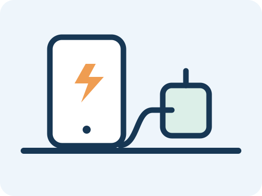
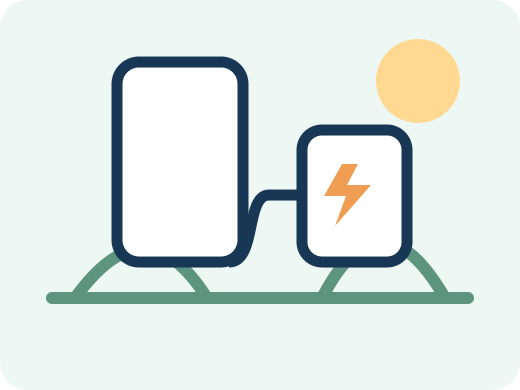
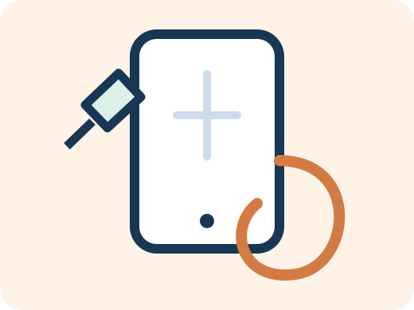

スマホ周辺機器の選び方
対応機種と接続方法を確認します。
詳しく見る →家電、ガジェット、日用品、防災用品など、暮らしに役立つ商品を分かりやすく整理・比較する商品情報メディアです。
使う場所や目的に近いカテゴリーから、商品情報と選び方を確認できます。



画像は商品の用途をイメージした当サイト独自のイラストです。実際の商品とは異なります。
選び方、比較、基礎知識、注意点をカテゴリー横断で掲載します。
商品によって比較項目を変え、用途や使用環境に合う候補を探しやすくします。
用途、設置場所、使い方によって適した商品は異なります。実際に使用していない商品について、使用体験のような表現は行いません。記事には広告が含まれる場合があります。
運営・調査方針を見るCHOICE LABはA8.netを通じて楽天市場の商品広告を掲載しています。当サイトの広告を経由して商品を購入された場合、運営者に報酬が発生することがあります。価格、在庫、送料、ポイント還元、商品仕様などの最新情報は楽天市場の販売ページでご確認ください。詳しくは広告掲載ポリシーをご覧ください。